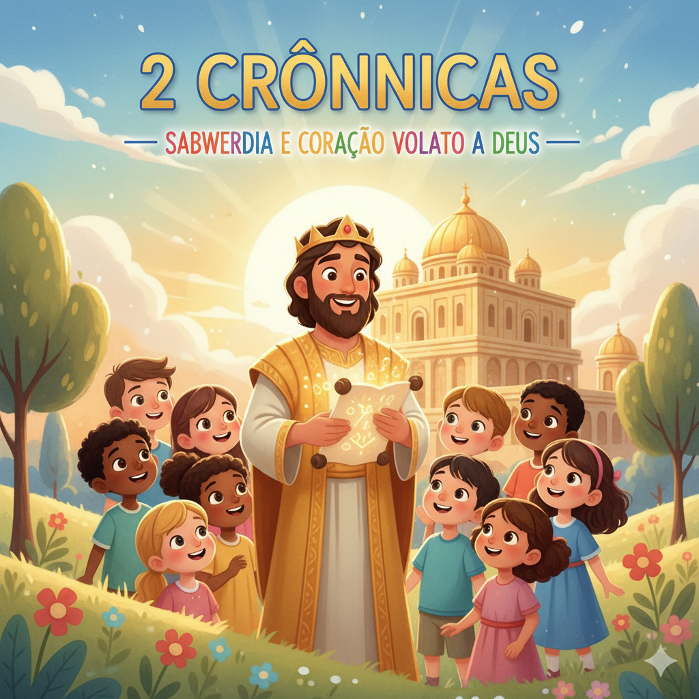
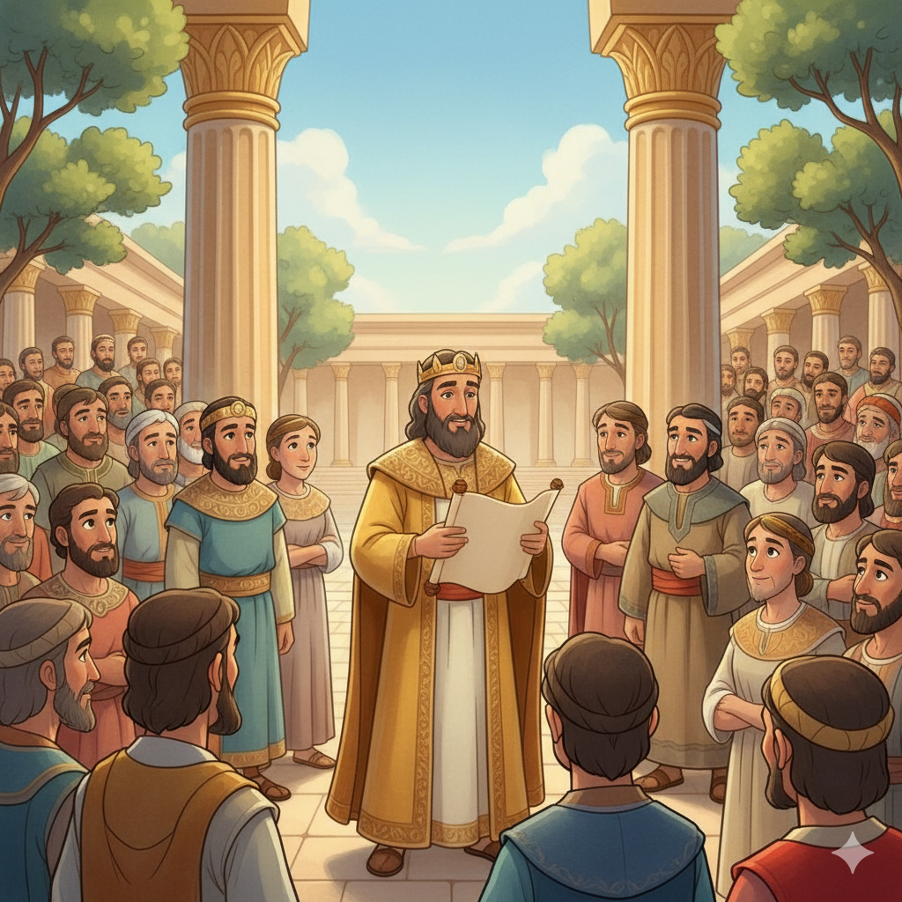
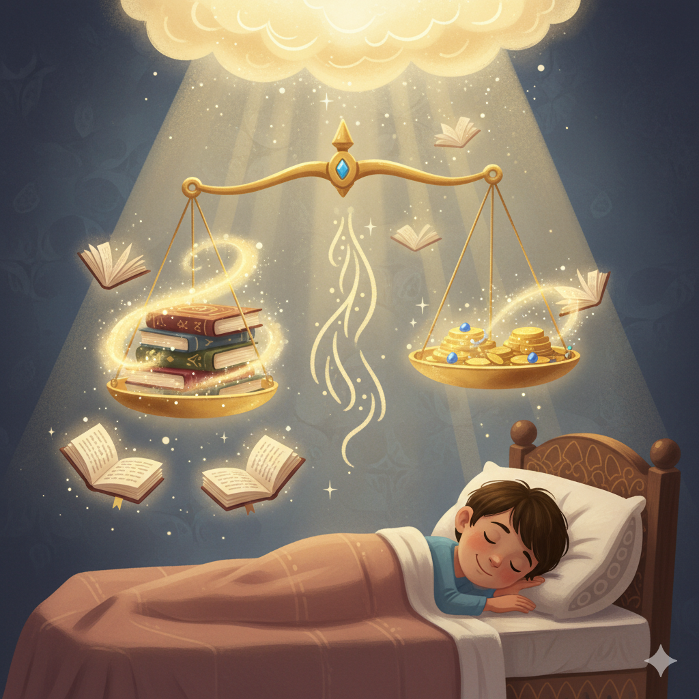

Templo, Reforma e a Grande Promessa de Deus — Um Resumo Visual para Crianças
Quando Salomão terminou a dedicação do Templo e o povo louvou a Deus, algo extraordinário aconteceu: uma nuvem tão densa de glória encheu o Templo que os sacerdotes não conseguiam entrar! Era a presença de Deus vinda morar entre o Seu povo.
Logo após a dedicação do Templo, Deus apareceu a Salomão de noite e deu uma das promessas mais amadas da Bíblia — que vale para toda geração, inclusive para nós hoje. Ela tem quatro condições e uma garantia tripla!
2 Crônicas termina com algo surpreendente: o decreto do rei Ciro da Pérsia, libertando Israel para voltar para casa! Depois de anos de exílio na Babilônia, o último versículo do livro é uma chamada: "Quem é do Seu povo? Que suba!"
"Se o meu povo se humilhar, orar, me buscar e abandonar os seus maus caminhos, então eu ouvirei do céu, perdoarei os seus pecados e sararei a sua terra."
— 2 Crônicas 7:14
Deus disse isso a Salomão logo após a dedicação do Templo. É uma das promessas mais citadas em toda a Bíblia — e ainda vale hoje! Tem 4 condições (humilhar, orar, buscar, abandonar o mal) e 3 promessas (ouvir, perdoar, sarar).
Humilhar-se — reconhecer que precisamos de Deus!
Orar e buscar — aproximar-se de Deus de verdade!
Abandonar o mal — fazer a parte que nos cabe!

Construiu o Templo em 7 anos. Sua oração de dedicação é uma das mais longas e belas da Bíblia. Deus apareceu a ele duas vezes — mas no final, Salomão se afastou por causa das muitas esposas que trouxeram ídolos para Israel.
Um dos reis mais fiéis de Judá. Limpou o Templo que estava abandonado há anos e celebrou a Páscoa pela primeira vez em décadas — com tanto entusiasmo que o povo pediu mais 7 dias de festa! Sua oração destruiu 185.000 soldados assírios.
Começou a reinar com 8 anos! Aos 16 começou a buscar a Deus, aos 20 começou a reforma, e aos 26 mandou reformar o Templo — onde encontraram o Livro da Lei perdido há décadas. Quando ouviu as palavras, rasgou suas vestes e chorou.
Salomão construiu o Templo e o dedicou com uma oração de 52 versículos. Quando terminou, fogo desceu do céu e consumiu o sacrifício! Então Deus apareceu a ele com a promessa de 2 Cr 7:14 — uma das maiores promessas de toda a Bíblia.
Após a divisão do reino, 2 Crônicas foca apenas em Judá — os reis da linhagem de Davi. Cada rei é avaliado com uma pergunta: ele fez o que era reto aos olhos do Senhor? Os bons reformaram; os ruins trouxeram idolatria e colheram consequências.
Ezequias abriu as portas do Templo que estavam fechadas e limpou tudo. Celebrou a Páscoa com tal alegria que o povo pediu mais 7 dias — e Deus enviou chuva de bênçãos. Quando o exército assírio cercou Jerusalém, ele orou — e 185.000 soldados morreram numa noite.
Josiás fez a maior reforma de Judá depois de encontrar o Livro da Lei. Mas o povo voltou ao mal depois dele. Judá caiu para a Babilônia em 586 a.C. — mas o livro termina com esperança: o decreto de Ciro libertando Israel para voltar para casa!

🌍 2 Cr 7:14 — citado por líderes do mundo inteiro!
Esse versículo foi citado por presidentes, líderes e pastores em momentos de crise nacional ao longo de séculos. Escrito há 3.000 anos, continua sendo a oração de avivamento mais pedida do mundo — porque as condições e as promessas são eternas.
🎉 A Páscoa de Ezequias durou 14 dias!
Ezequias celebrou a Páscoa por 7 dias — e o povo ficou tão empolgado que pediu mais 7 dias! (2 Cr 30:23) Era a maior festa religiosa desde Salomão. Quando Deus aviva, as pessoas não querem ir embora!
✝️ Jesus é o Templo cumprido!
A glória de Deus que encheu o Templo de Salomão (2 Cr 5:14) — João 1:14 diz que "o Verbo se fez carne e habitou entre nós" (o grego diz "tabernaculou"). Jesus É o Templo vivo, onde a glória de Deus habita de forma permanente!
2 Cr 7:14 tem 4 condições: humilhar, orar, buscar e abandonar o mal. Qual dessas quatro é mais difícil para você? O que impede você de cumpri-la?
As portas do Templo tinham sido fechadas antes de Ezequias as abrir de novo. Há alguma área da sua vida com Deus que foi "fechada" e precisa ser reaberta?
Josiás chorou ao ouvir a Palavra de Deus lida em voz alta — porque ele entendeu que tinha descuidado dela. Quando foi a última vez que a Bíblia te tocou assim?
Leia 2 Crônicas 7:14 em voz alta como uma oração pessoal. Substitua "o meu povo" por "eu". As 4 condições e as 3 promessas são suas também!
Assim como Ezequias abriu as portas do Templo fechadas, identifique uma prática espiritual que você abandonou e volte a ela esta semana — leitura, oração, louvor.
Leia um trecho da Bíblia esta semana como se fosse a primeira vez — com atenção e coração aberto. Anote o que te surpreendeu!
Trilho Kids | Desenvolvido com ❤️ para crianças © 2025